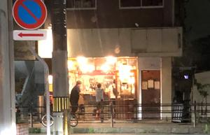
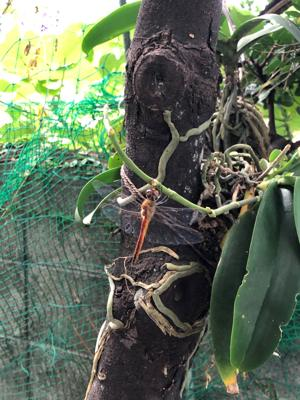
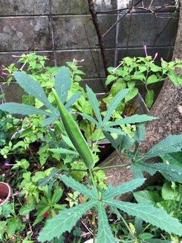

うるがいの話 ある日
最新: 少し気温下がる
うるがいとは 前提知識です
カニの画像をクリックすると『うるがいの話』サイトを表示します
うるがい(ｳﾙｶﾞｲ urugai)とは、『もずくがに』の名前でとても大きくなります。
たながー（ﾀﾅｶﾞｰtanagaa）とは手長えびのことで、何種類かあり大きいのは車 エビぐらいになります。
ぶながー(bunagaa)とは、赤い髪の毛、赤い身体、そして身長は１ｍ２０ｃｍ ぐらい、川の蟹を食べているの目撃された。場所は沖縄県国頭郡大宜味村のと ある村僕の隣近所に住んでいる爺さんから、聞いた話です。
2021年09月19日 (日）
少し気温下がる
16:01



明け方、寝る前に扇風機を強く回して寝ていたため鼻水を垂らし、目を覚ます
昨夜から、気温が一度下がっている。今朝は過ごしやすい、秋の気配を感じる
。たかだか、一度だけど、逆に一度高いと・・・。昨日の１１時頃、コドモか
らワクチン接種した後、買い物をしていたら眩暈がするので私の家で休みたい
と、え！、センターには電話したの、そこまでのレベルではない、とりあえず
アパートに迎えに行く。そして、昼前なのでモスバーガーを買う、コドモも食
欲がないけどというが、コドモの分も買う。家に着き、モスバーガーを食べ始
めるとコドモが自分のを、ペロリと食い上げ、もっとない？と言う、食べ始め
た私のモスバーガーを半分、分けてあげる。気分悪いのは、朝ごはん食べてな
いからジャンとヨメが突っ込む。私は、カップヌードルを食べた。体調はすっ
かり良くなったコドモは、いつものように夕飯をタップリ食べ夜７時過ぎにア
パートに送る。おもろまち駅の前からサンエーの向かいの日銀を通り抜ける、
うん、今日は、シルバーウイークの前の金曜日だよな、なんなんだこのサンサ
ンとしている街並み、車も人もいない。まるで夜中１１時過ぎの街並みである。
ところがである、那覇西高校の近くの酒屋が、人だかり、おお！、これは、と
おり過ぎる時、ジョッキのボトルが客の前に沢山あるのが見える。コドモが、
１２時前まで酒を出しているよと。コドモを送った帰り懐かしい、栄町はどう
なっているのだろうと様子を見ることにした。なんと普通に人だかりで酒（多
分）を飲んでいる店が、いくつかあった。コロナ禍の夜８時前のドライブでみ
た街の景色である。